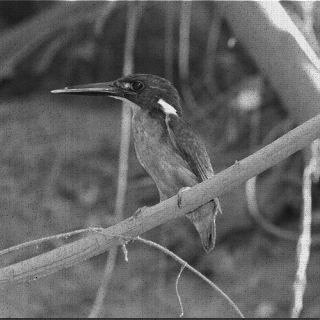
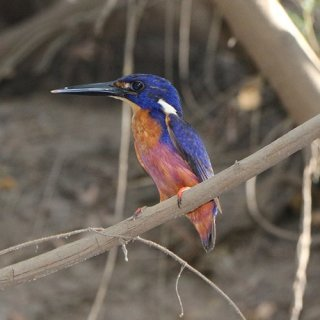

|
Zach Salehe I'm an incoming computer science PhD student at Harvard, where I'll be advised by Todd Zickler. Previously, I did my undergrad in computer science at the University of Toronto. In my last couple years of undergrad, I did research in computational imaging, where I was advised by Kyros Kutulakos and David Lindell. |

|
ResearchI'm broadly interested in imaging, vision, and graphics. My current research revolves around single-photon imaging and scene understanding. |
|


|
Develping a Simulation Pipeline for Next-Generation Computational Cameras
Zach Salehe, Rahul Gulve, Esther Y. H. Lin, David B. Lindell, Kiriakos N. Kutulakos 2023 We provide a simulation pipeline in order to accurately model the T6, a next-generation computational camera developed by the University of Toronto. |
|
Template stolen from Jon Barron. |